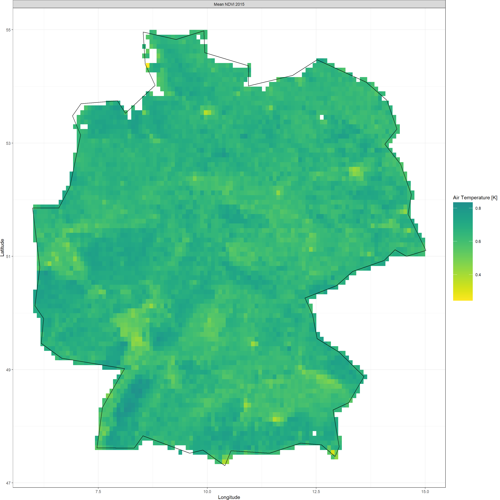
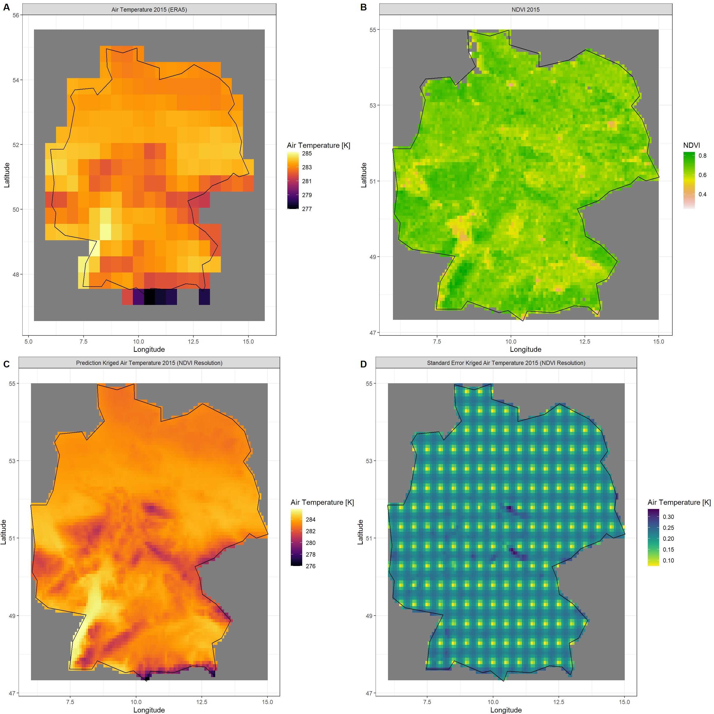
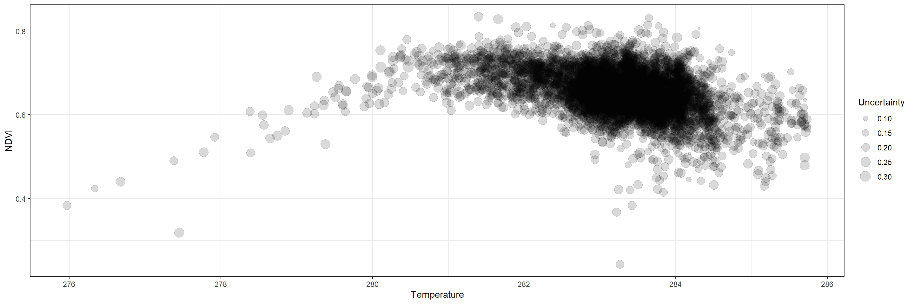
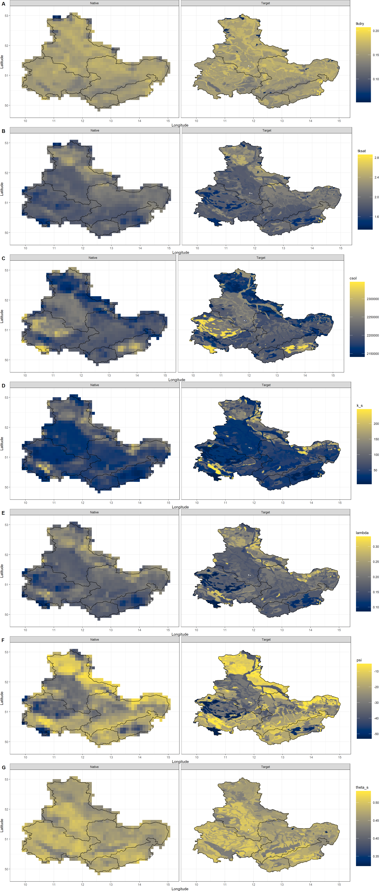
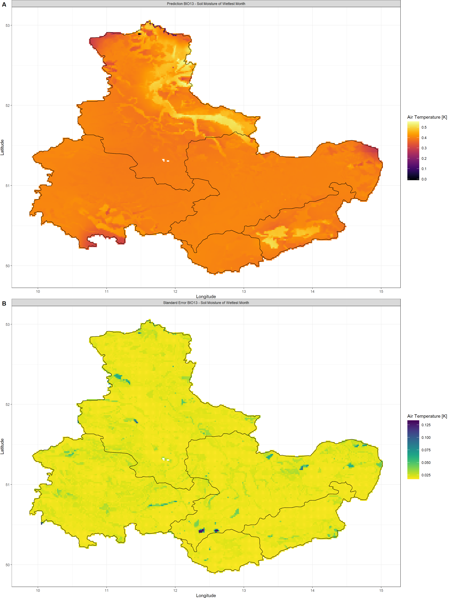
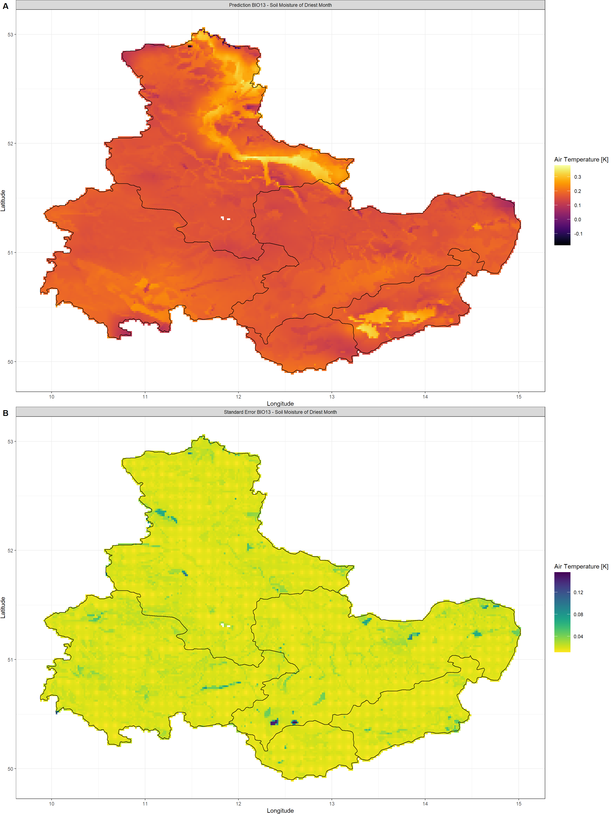
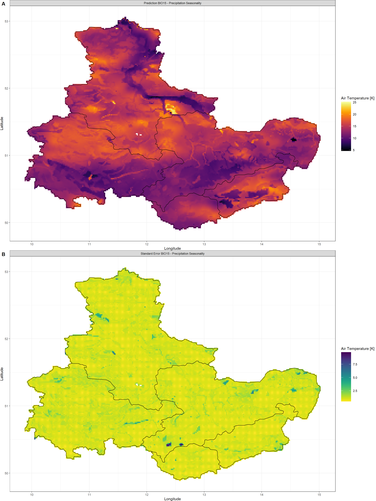
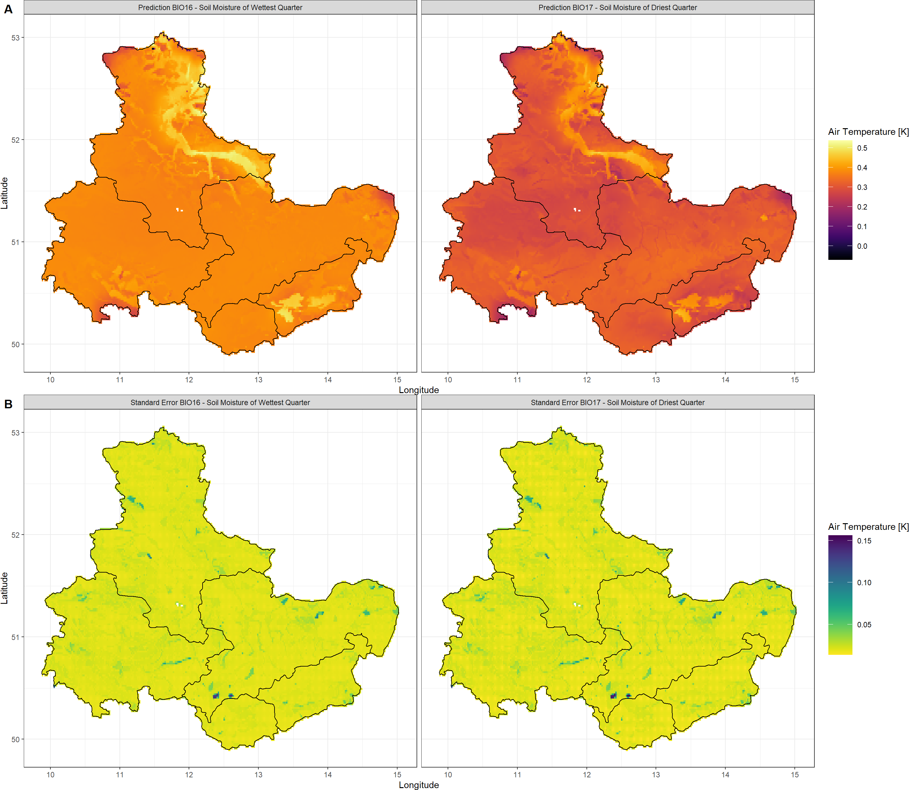
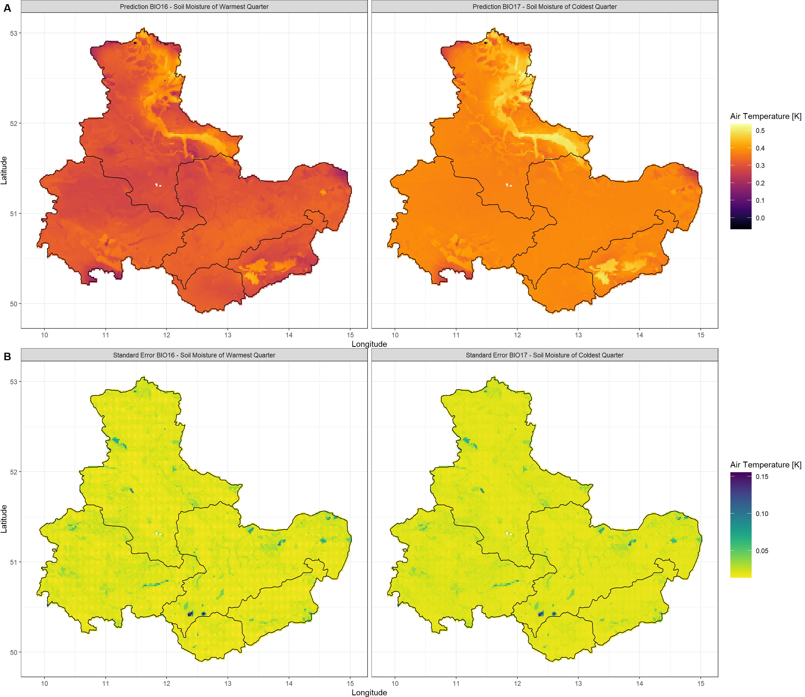

Third-Party Data
KrigR is currently undergoing development. As a result, this part of the workshop has become deprecated. Please refer to the setup quick guide portions of this material as these are up-to-date.
First, we load KrigR:
library(KrigR)
Matching Third-Party Data
I expect that you won’t want to downscale to specific resolutions most of the time, but rather, match an already existing spatial data set in terms of spatial resolution and extent. Again, the KrigR package got you covered!
Here, we illustrate this with an NDVI-based example. The NDVI is a satellite-derived vegetation index which tells us how green the Earth is. It comes in bi-weekly intervals and at a spatial resolution of .08333 (roughly 9km). Here, we download all NDVI data for the year 2015 and then create the annual mean. This time, we do so for all of Germany because of its size and topographical variety.
Third-Party Data
Shape_shp <- ne_countries(country = "Germany")
## downloading gimms data
gimms_files <- downloadGimms(x = as.Date("2015-01-01"), # download from January 1982
y = as.Date("2015-12-31"), # download to December 1982
dsn = Dir.Data, # save downloads in data folder
quiet = FALSE # show download progress
)
## prcoessing gimms data
gimms_raster <- rasterizeGimms(x = gimms_files, # the data we rasterize
remove_header = TRUE # we don't need the header of the data
)
indices <- monthlyIndices(gimms_files) # generate month indices from the data
gimms_raster_mvc <- monthlyComposite(gimms_raster, # the data
indices = indices # the indices
)
Negatives <- which(values(gimms_raster_mvc) < 0) # identify all negative values
values(gimms_raster_mvc)[Negatives] <- 0 # set threshold for barren land (NDVI<0)
gimms_raster_mvc <- crop(gimms_raster_mvc, extent(Shape_shp)) # crop to extent
gimms_mask <- KrigR::mask_Shape(gimms_raster_mvc[[1]], Shape = Shape_shp) # create mask ith KrigR-internal function to ensure all edge cells are contained
NDVI_ras <- mask(gimms_raster_mvc, gimms_mask) # mask out shape
NDVI_ras <- calc(NDVI_ras, fun = mean, na.rm = TRUE) # annual mean
writeRaster(NDVI_ras, format = "CDF", file = file.path(Dir.Data, "NDVI")) # save file
So what does this raster look like?
NDVI_ras
## class : RasterStack
## dimensions : 92, 108, 9936, 1 (nrow, ncol, ncell, nlayers)
## resolution : 0.08333333, 0.08333333 (x, y)
## extent : 6, 15, 47.33333, 55 (xmin, xmax, ymin, ymax)
## crs : +proj=longlat +datum=WGS84 +no_defs
## names : layer
## min values : 0.2430333
## max values : 0.8339083
And a visualisation of the same:
Plot_Raw(NDVI_ras,
Shp = Shape_shp,
Dates = "Mean NDVI 2015",
COL = viridis(100, begin = 0.5, direction = -1))
 As stated above, we want to match this with our output.
KrigR Workflow
We could do this whole analysis in our three steps as outlined above, but why bother when the pipeline gets the job done just as well?
Target_res argument of the krigR() or the download_DEM() function.
This time we want to downscale from ERA5 resolution (roughly 30km) because the ERA5-Land data already matches the NDVI resolution (roughly 9km). Here’s how we do this:
NDVI_Krig <- krigR(
## download_ERA block
Variable = '2m_temperature',
Type = 'reanalysis',
DataSet = 'era5',
DateStart = '2015-01-01',
DateStop = '2015-12-31',
TResolution = 'year',
TStep = 1,
Extent = Shape_shp,
API_User = API_User,
API_Key = API_Key,
SingularDL = TRUE,
## download_DEM block
Target_res = NDVI_ras,
Source = "Drive",
## krigR block
Cores = 1,
FileName = "AirTemp_NDVI.nc",
nmax = 80,
Dir = Dir.Exports)
## download_ERA() is starting. Depending on your specifications, this can take a significant time.
## User 39340 for cds service added successfully in keychain
## Staging 1 download(s).
## Staging your request as a singular download now. This can take a long time due to size of required product.
## 0001_2m_temperature_2015-01-01_2015-12-31_year.nc download queried
## Requesting data to the cds service with username 39340
## - staging data transfer at url endpoint or request id:
## 4d24fc1f-2be1-4b65-b588-be3ba2b5938b
## - timeout set to 10.0 hours
## - polling server for a data transfer
\ polling server for a data transfer
| polling server for a data transfer
/ polling server for a data transfer
- polling server for a data transfer
\ polling server for a data transfer
| polling server for a data transfer
/ polling server for a data transfer
- polling server for a data transfer
\ polling server for a data transfer
| polling server for a data transfer
/ polling server for a data transfer
- polling server for a data transfer
\ polling server for a data transfer
| polling server for a data transfer
/ polling server for a data transfer
- polling server for a data transfer
\ polling server for a data transfer
| polling server for a data transfer
/ polling server for a data transfer
- polling server for a data transfer
\ polling server for a data transfer
| polling server for a data transfer
/ polling server for a data transfer
- polling server for a data transfer
## Downloading file
##
|
| | 0%
|
|================================================================================| 100%
## - moved temporary file to -> /Users/erikkus/Documents/HomePage/content/courses/krigr/Exports/0001_2m_temperature_2015-01-01_2015-12-31_year.nc
## - Delete data from queue for url endpoint or request id:
## https://cds.climate.copernicus.eu/api/v2/tasks/4d24fc1f-2be1-4b65-b588-be3ba2b5938b
##
## Checking for known data issues.
## Loading downloaded data for masking and aggregation.
## Masking according to shape/buffer polygon
## Aggregating to temporal resolution of choice
##
|
| | 0%
|
|=========================== | 33%
|
|===================================================== | 67%
|
|================================================================================| 100%
##
## Commencing Kriging
## Kriging of remaining 0 data layers should finish around: 2023-04-03 16:54:51
##
|
| | 0%
|
|================================================================================| 100%
So? Did we match the pre-existing data?
NDVI_Krig[[1]]
## class : RasterBrick
## dimensions : 92, 108, 9936, 1 (nrow, ncol, ncell, nlayers)
## resolution : 0.08333333, 0.08333333 (x, y)
## extent : 6, 15, 47.33333, 55 (xmin, xmax, ymin, ymax)
## crs : +proj=longlat +datum=WGS84 +no_defs
## source : memory
## names : var1.pred
## min values : 275.9705
## max values : 285.7357
We nailed this!
Let’s take one final look at our (A) raw ERA5 data, (B) NDVI data, (C) Kriged ERA5 data, and (D) standard error of our Kriging output:
Click here for download plotting calls
### ERA-Plot
ERA_df <- as.data.frame(raster(file.path(Dir.Exports, "2m_temperature_2015-01-01_2015-12-31_year.nc")), xy = TRUE) # turn raster into dataframe
colnames(ERA_df)[c(-1,-2)] <- "Air Temperature 2015 (ERA5)"
ERA_df <- gather(data = ERA_df, key = Values, value = "value", colnames(ERA_df)[c(-1,-2)]) # make ggplot-ready
Raw_plot <- ggplot() + # create a plot
geom_raster(data = ERA_df , aes(x = x, y = y, fill = value)) + # plot the raw data
facet_wrap(~Values) + # split raster layers up
theme_bw() + labs(x = "Longitude", y = "Latitude") + # make plot more readable
scale_fill_gradientn(name = "Air Temperature [K]", colours = inferno(100)) + # add colour and legend
geom_polygon(data = Shape_shp, aes(x = long, y = lat, group = group), colour = "black", fill = "NA") # add shape
### NDVI-Plot
NDVI_df <- as.data.frame(NDVI_ras, xy = TRUE) # turn raster into dataframe
colnames(NDVI_df)[c(-1,-2)] <- "NDVI 2015"
NDVI_df <- gather(data = NDVI_df, key = Values, value = "value", colnames(NDVI_df)[c(-1,-2)]) # make ggplot-ready
NDVI_plot <- ggplot() + # create a plot
geom_raster(data = NDVI_df , aes(x = x, y = y, fill = value)) + # plot the raw data
facet_wrap(~Values) + # split raster layers up
theme_bw() + labs(x = "Longitude", y = "Latitude") + # make plot more readable
scale_fill_gradientn(name = "NDVI", colours = rev(terrain.colors(100))) + # add colour and legend
geom_polygon(data = Shape_shp, aes(x = long, y = lat, group = group), colour = "black", fill = "NA") # add shape
### KRIGED-Plots
Dates = c("Kriged Air Temperature 2015 (NDVI Resolution)")
Type_vec <- c("Prediction", "Standard Error") # these are the output types of krigR
Colours_ls <- list(inferno(100), rev(viridis(100))) # we want separate colours for the types
Plots_ls <- as.list(NA, NA) # this list will be filled with the output plots
KrigDF_ls <- as.list(NA, NA) # this list will be filled with the output data
for(Plot in 1:2){ # loop over both output types
Krig_df <- as.data.frame(NDVI_Krig[[Plot]], xy = TRUE) # turn raster into dataframe
colnames(Krig_df)[c(-1,-2)] <- paste(Type_vec[Plot], Dates) # set colnames
Krig_df <- gather(data = Krig_df, key = Values, value = "value", colnames(Krig_df)[c(-1,-2)]) # make ggplot-ready
Plots_ls[[Plot]] <- ggplot() + # create plot
geom_raster(data = Krig_df , aes(x = x, y = y, fill = value)) + # plot the kriged data
facet_wrap(~Values) + # split raster layers up
theme_bw() + labs(x = "Longitude", y = "Latitude") + # make plot more readable
scale_fill_gradientn(name = "Air Temperature [K]", colours = Colours_ls[[Plot]]) + # add colour and legend
theme(plot.margin = unit(c(0, 0, 0, 0), "cm")) + # reduce margins (for fusing of plots)
geom_polygon(data = Shape_shp, aes(x = long, y = lat, group = group), colour = "black", fill = "NA") # add shape
KrigDF_ls[[Plot]] <- Krig_df
} # end of type-loop
plot_grid(plotlist = list(Raw_plot, NDVI_plot, Plots_ls[[1]], Plots_ls[[2]]),
nrow = 2, labels = "AUTO")

So what can we learn from this? Let’s plot the relation between temperature and NDVI:
plot_df <- as.data.frame(cbind(KrigDF_ls[[1]][,4],
KrigDF_ls[[2]][,4],
NDVI_df[,4]))
colnames(plot_df) <- c("Temperature", "Uncertainty", "NDVI")
ggplot(plot_df,
aes(x = Temperature, y = NDVI, size = Uncertainty)) +
geom_point(alpha = 0.15) +
theme_bw()

Looks like NDVI increases as mean annual temperatures rise, but reaches a peak around 281-282 Kelvin with a subsequent decrease as mean annual temperatures rise higher.
Using Third-Party Data
The krigR() function is designed to work with non-ERA5(-Land) data as well as non-GMTED2010 covariate data. To downscale your own spatial products using different covariate data than the GMTED2010 DEM we use as a default, you need to step into the three-step workflow.
krigR() supports any combination of ERA5-family reanalysis, GMTED2010, third-party climate data, and third-party covariate data. Here, we just demonstrate the use of other covariates than the GMTED2010 used by KrigR by default.
The product we will focus on here is the soil moisture data contained in our BCq_ras product established
here. With this data set, we also revert back to our original
study region:
The reason we focus on soil moisture for this exercise? In this publication (Figure 3), we demonstrate that soil moisture data can be statistically downscales using kriging with some third-party covariates. As such, we pick up from where we left off when we discussed kriging of bioclimatic products.
Click here for file:
Download Qsoil_BC.nc and place it into your data directory.BCq_ras <- stack(file.path(Dir.Data, "Qsoil_BC.nc"))
Third-Party Data Covariates
In this publication, we demonstrate how soil moisture data can be reliably statistically downscaled using soil property data which we obtain from the Land-Atmosphere Interaction Research Group at Sun Yat-sen University.
Below, you will find the code needed to obtain the data of global coverage at roughly 1km spatial resolution. The code chunk below also crops and masks the data according to our study region and subsequently deletes the storage-heavy global files (3.5GB each in size). This process takes a long time due to download speeds.
Click here for the covariate file to save yourself downloading and processing of global data:
Download SoilCovs.nc and place it into your covariates directory.# documentation of these can be found here http://globalchange.bnu.edu.cn/research/soil4.jsp
SoilCovs_vec <- c("tkdry", "tksat", "csol", "k_s", "lambda", "psi", "theta_s") # need these names for addressing soil covariates
if(!file.exists(file.path(Dir.Covariates, "SoilCovs.nc"))){
print("#### Loading SOIL PROPERTY covariate data. ####")
# create lists to combine soil data into one
SoilCovs_ls <- as.list(rep(NA, length(SoilCovs_vec)))
names(SoilCovs_ls) <- c(SoilCovs_vec)
## Downloading, unpacking, and loading
for(Soil_Iter in SoilCovs_vec){
if(!file.exists(file.path(Dir.Covariates, paste0(Soil_Iter, ".nc")))) { # if not downloaded and processed yet
print(paste("Handling", Soil_Iter, "data."))
Dir.Soil <- file.path(Dir.Covariates, Soil_Iter)
dir.create(Dir.Soil)
download.file(paste0("http://globalchange.bnu.edu.cn/download/data/worldptf/", Soil_Iter,".zip"),
destfile = file.path(Dir.Soil, paste0(Soil_Iter, ".zip"))
) # download data
unzip(file.path(Dir.Soil, paste0(Soil_Iter, ".zip")), exdir = Dir.Soil) # unzip data
File <- list.files(Dir.Soil, pattern = ".nc")[1] # only keep first soil layer
Soil_ras <- raster(file.path(Dir.Soil, File)) # load data
SoilCovs_ls[[which(names(SoilCovs_ls) == Soil_Iter)]] <- Soil_ras # save to list
writeRaster(x = Soil_ras, filename = file.path(Dir.Covariates, Soil_Iter), format = "CDF")
unlink(Dir.Soil, recursive = TRUE)
}else{
print(paste(Soil_Iter, "already downloaded and processed."))
SoilCovs_ls[[which(names(SoilCovs_ls) == Soil_Iter)]] <- raster(file.path(Dir.Covariates, paste0(Soil_Iter, ".nc")))
}
}
## data handling and manipulation
SoilCovs_stack <- stack(SoilCovs_ls) # stacking raster layers from list
SoilCovs_stack <- crop(SoilCovs_stack, extent(BCq_ras)) # cropping to extent of data we have
SoilCovs_mask <- KrigR::mask_Shape(SoilCovs_stack[[1]], Shape = Shape_shp) # create mask with KrigR-internal function to ensure all edge cells are contained
SoilCovs_stack <- mask(SoilCovs_stack, SoilCovs_mask) # mask out shape
## writing the data
writeRaster(x = SoilCovs_stack, filename = file.path(Dir.Covariates, "SoilCovs"), format = "CDF")
## removing the global files due to their size
unlink(file.path(Dir.Covariates, paste0(SoilCovs_vec, ".nc")))
}
SoilCovs_stack <- stack(file.path(Dir.Covariates, "SoilCovs.nc"))
names(SoilCovs_stack) <- SoilCovs_vec
Let’s have a look at these data:
SoilCovs_stack
## class : RasterStack
## dimensions : 408, 648, 264384, 7 (nrow, ncol, ncell, nlayers)
## resolution : 0.008333333, 0.008333333 (x, y)
## extent : 9.725, 15.125, 49.75, 53.15 (xmin, xmax, ymin, ymax)
## crs : +proj=longlat +datum=WGS84 +no_defs
## names : tkdry, tksat, csol, k_s, lambda, psi, theta_s
## min values : 5.200000e-02, 1.337000e+00, 2.141000e+06, 5.212523e+00, 8.600000e-02, -5.307258e+01, 3.230000e-01
## max values : 2.070000e-01, 2.862000e+00, 2.346400e+06, 2.461686e+02, 3.330000e-01, -5.205317e+00, 5.320000e-01
Now we need to establish target and training resolution of our covariate data.
First, we focus on the training resolution covariate data. We match our covariate data to our spatial product which we wish to downscale by resampling the covariate data to the coarser resolution:
Coarsecovs <- resample(x = SoilCovs_stack, y = BCq_ras)
Second, we aggregate the covariate data to our desired resolution. In this case, 0.02 as done previously here:
Finecovs <- aggregate(SoilCovs_stack, fact = 0.02/res(SoilCovs_stack)[1])
Finally, we combine these into a list like the output of download_DEM():
Covs_ls <- list(Coarsecovs, Finecovs)
Plot_Covs(Covs = Covs_ls, Shape_shp)

download_DEM().
Kriging Third-Party Data
Finally, we can statistically downscale our soil moisture data using the soil property covariates. For this, we need to specify a new KrigingEquation.
KrigingEquation argument, you may specify non-linear combinations of covariates for your call to krigR().
KrigingEquation in krigR() and your covariates do not contain a layer called "DEM", krigR() will notify you that its default formula cannot be executed and will attempt to build an additive formula from the data it can find. krigr() will inform you of this and ask for your approval before proceeding.
This auto-generated formula would be the same as the one we specify here - an additive combination of all covariates found both at coarse and fine resolutions. Of course, this formula can also be specified to reflect interactive effects.
Here, I automate the generation of our KrigingEquation:
KrigingEquation <- paste0("ERA ~ ", paste(SoilCovs_vec, collapse = " + "))
KrigingEquation
## [1] "ERA ~ tkdry + tksat + csol + k_s + lambda + psi + theta_s"
In accordance with our
downscaling of the temperature-portion of the bioclimatic data, (1) I only hand the last 8 layers to the kriging call because those are the soil moisture data, (2) I leave out the Cores argument, so that krigR() determines how many cores your machine has and uses all of them to speed up the computation of the multi-layer raster, and (3) I set nmax to 80 to approximate a typical weather system in size:
BC_Water_Krig <- krigR(Data = BCq_ras[[12:19]],
Covariates_coarse = Covs_ls[[1]],
Covariates_fine = Covs_ls[[2]],
KrigingEquation = KrigingEquation,
FileName = "BC_Water_Krig",
Dir = Dir.Covariates,
nmax = 80
)
## Warning: [writeCDF] for better results use file extension '.nc' or '.cdf'
## see: https://stackoverflow.com/a/65398262/635245
## Warning: [rast] unknown extent
## Warning: [writeCDF] for better results use file extension '.nc' or '.cdf'
## see: https://stackoverflow.com/a/65398262/635245
## Warning: [rast] unknown extent
BIO12 - Annual Mean Soil Moisture
Click here for plotting call and plot:
Plot_Krigs(lapply(BC_Water_Krig[-3], "[[", 1),
Shp = Shape_shp,
Dates = "BIO12 - Annual Mean Soil Moisture")
BIO13 - Soil Moisture of Wettest Month
Click here for plotting call and plot:
Plot_Krigs(lapply(BC_Water_Krig[-3], "[[", 2),
Shp = Shape_shp,
Dates = "BIO13 - Soil Moisture of Wettest Month")

BIO14 - Soil Moisture of Driest Month
Click here for plotting call and plot:
Plot_Krigs(lapply(BC_Water_Krig[-3], "[[", 3),
Shp = Shape_shp,
Dates = "BIO13 - Soil Moisture of Driest Month")

BIO15 - Soil Moisture Seasonality
Click here for plotting call and plot:
Plot_Krigs(lapply(BC_Water_Krig[-3], "[[", 4),
Shp = Shape_shp,
Dates = "BIO15 - Precipitation Seasonality")

BIO16 & BIO17 - Soil Moisture of Wettest and Driest Quarter
Click here for plotting call and plot:
Plot_Krigs(lapply(BC_Water_Krig[-3], "[[", 5:6),
Shp = Shape_shp,
Dates = c("BIO16 - Soil Moisture of Wettest Quarter",
"BIO17 - Soil Moisture of Driest Quarter")
)

BIO18 & BIO19 - Precipitation of Warmest and Coldest Quarter
Click here for plotting call and plot:
Plot_Krigs(lapply(BC_Water_Krig[-3], "[[", 7:8),
Shp = Shape_shp,
Dates = c("BIO16 - Soil Moisture of Warmest Quarter",
"BIO17 - Soil Moisture of Coldest Quarter")
)

This concludes our exercise for using third-party data in KrigR.
Session Info
sessionInfo()
## R version 4.2.3 (2023-03-15)
## Platform: x86_64-apple-darwin17.0 (64-bit)
## Running under: macOS Big Sur ... 10.16
##
## Matrix products: default
## BLAS: /Library/Frameworks/R.framework/Versions/4.2/Resources/lib/libRblas.0.dylib
## LAPACK: /Library/Frameworks/R.framework/Versions/4.2/Resources/lib/libRlapack.dylib
##
## locale:
## [1] en_US.UTF-8/en_US.UTF-8/en_US.UTF-8/C/en_US.UTF-8/en_US.UTF-8
##
## attached base packages:
## [1] parallel stats graphics grDevices utils datasets methods base
##
## other attached packages:
## [1] mapview_2.11.0 rnaturalearthdata_0.1.0 rnaturalearth_0.3.2
## [4] gimms_1.2.1 ggmap_3.0.2 cowplot_1.1.1
## [7] viridis_0.6.2 viridisLite_0.4.1 ggplot2_3.4.1
## [10] tidyr_1.3.0 KrigR_0.1.2 terra_1.7-21
## [13] httr_1.4.5 stars_0.6-0 abind_1.4-5
## [16] fasterize_1.0.4 sf_1.0-12 lubridate_1.9.2
## [19] automap_1.1-9 doSNOW_1.0.20 snow_0.4-4
## [22] doParallel_1.0.17 iterators_1.0.14 foreach_1.5.2
## [25] rgdal_1.6-5 raster_3.6-20 sp_1.6-0
## [28] stringr_1.5.0 keyring_1.3.1 ecmwfr_1.5.0
## [31] ncdf4_1.21
##
## loaded via a namespace (and not attached):
## [1] leafem_0.2.0 colorspace_2.1-0 class_7.3-21
## [4] leaflet_2.1.2 satellite_1.0.4 base64enc_0.1-3
## [7] rstudioapi_0.14 proxy_0.4-27 farver_2.1.1
## [10] fansi_1.0.4 codetools_0.2-19 cachem_1.0.7
## [13] knitr_1.42 jsonlite_1.8.4 png_0.1-8
## [16] Kendall_2.2.1 compiler_4.2.3 assertthat_0.2.1
## [19] fastmap_1.1.1 cli_3.6.0 htmltools_0.5.4
## [22] tools_4.2.3 gtable_0.3.1 glue_1.6.2
## [25] dplyr_1.1.0 Rcpp_1.0.10 jquerylib_0.1.4
## [28] vctrs_0.6.1 blogdown_1.16 crosstalk_1.2.0
## [31] lwgeom_0.2-11 xfun_0.37 timechange_0.2.0
## [34] lifecycle_1.0.3 rnaturalearthhires_0.2.1 zoo_1.8-11
## [37] scales_1.2.1 gstat_2.1-0 yaml_2.3.7
## [40] curl_5.0.0 memoise_2.0.1 gridExtra_2.3
## [43] sass_0.4.5 reshape_0.8.9 stringi_1.7.12
## [46] highr_0.10 e1071_1.7-13 boot_1.3-28.1
## [49] intervals_0.15.3 RgoogleMaps_1.4.5.3 rlang_1.1.0
## [52] pkgconfig_2.0.3 bitops_1.0-7 evaluate_0.20
## [55] lattice_0.20-45 purrr_1.0.1 htmlwidgets_1.6.1
## [58] labeling_0.4.2 tidyselect_1.2.0 plyr_1.8.8
## [61] magrittr_2.0.3 bookdown_0.33 R6_2.5.1
## [64] generics_0.1.3 DBI_1.1.3 pillar_1.8.1
## [67] withr_2.5.0 units_0.8-1 xts_0.13.0
## [70] tibble_3.2.1 spacetime_1.2-8 KernSmooth_2.23-20
## [73] utf8_1.2.3 rmarkdown_2.20 jpeg_0.1-10
## [76] grid_4.2.3 zyp_0.11-1 FNN_1.1.3.2
## [79] digest_0.6.31 classInt_0.4-9 webshot_0.5.4
## [82] stats4_4.2.3 munsell_0.5.0 bslib_0.4.2